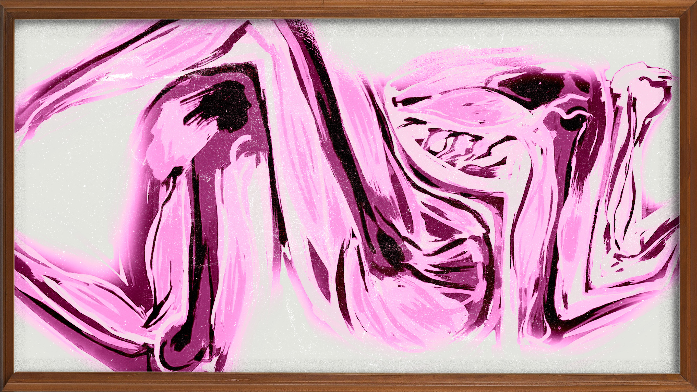

Mine, mine all mine
Allow me to be a bit possessive
I know I have you all to myself
But I want to have you for eternity
I'm you immediately
I see you in heaven
What will God say?
God will allow it
It's you, you're one of his favourites
Oh that teleportation and the Harry Potter spells were real
Geminio, and I'd be by your side every moment of the day
To hug you from behind, such serotonin
To feel your soft hands in mine
To kiss your lips
And let the waves of adrenaline wash over me
To drive you home while I have a hand in titi jr
As she reaches out for me to go deeper
To have your lips only remember my name each time we lay on those 8 inches of foam
Wrapped in each other's embrace.
I need you all to myself Onitemi
Your image being the first thing on my phone and your face being the last thing
I see before going to bed